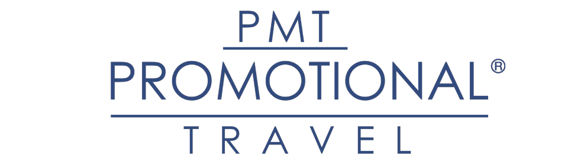
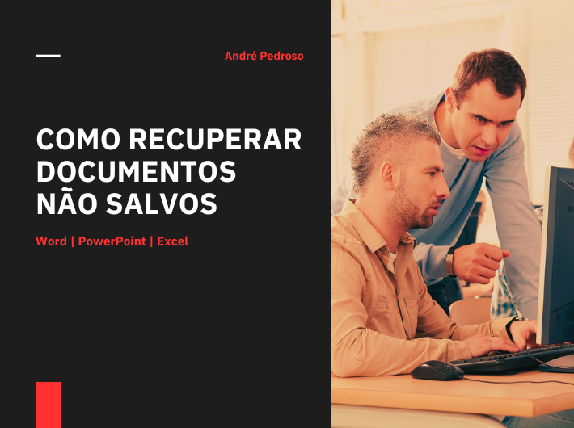
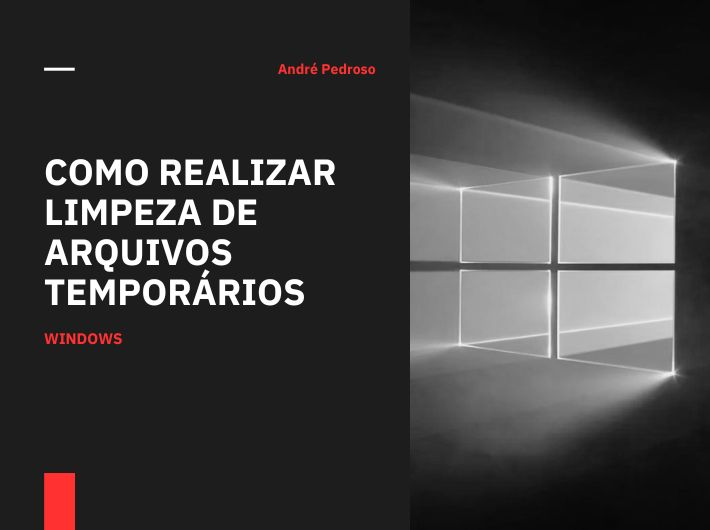

André Pedroso
Perfil Profissional
André Pedroso
Analista de Infraestrutura
Infraestrutura Robusta e Gestão Estratégica para Ambientes Críticos
Meu nome é André Pedroso, sou profissional de Tecnologia da Informação com mais de 13 anos de experiência consolidada em suporte técnico, administração de ambientes Microsoft e gestão completa de infraestrutura. Sou formado em Redes de Computadores e Administração de Empresas, o que me confere uma visão dual: a técnica apurada para tecnologia e a estratégica para o negócio.
Atualmente como Analista de Infraestrutura e Suporte na Marko Sistemas Metálicos, minha missão é garantir a alta disponibilidade e a segurança dos serviços de TI.
Minha carreira é marcada por atuação em grandes organizações - Promotional Travel, Tupperware Brands, Colégio Marista e SEEDUC/RJ, onde fui fundamental em:
- ✅ Liderança de projetos de modernização e migração de sistemas.
- ✅ Suporte a ambientes críticos e linhas de produção.
- ✅ Garantia de continuidade operacional em regimes de plantão.
Possuo um perfil analítico, orientado a resultados e focado na otimização da eficiência. Busco sempre alinhar soluções tecnológicas às necessidades estratégicas da organização, simplificando rotinas e aprimorando a experiência do usuário final.
Expertise Técnica e Visão de Negócio
Infraestrutura & Redes
Administração de servidores, redes avançadas e conectividade.
Cloud & Microsoft 365
Gestão de ambientes Azure, licenciamento e governança M365.
Segurança & LGPD
Proteção de dados, conformidade e auditoria de sistemas.
Liderança de Equipes
Gestão de pessoas e projetos focada em alta produtividade.
Pensamento Estratégico
Alinhamento da TI aos objetivos financeiros e operacionais.
Comunicação Assertiva
Tradução de complexidade técnica para linguagem executiva.
Formação
Tecnologia da Informação
Colégio Realengo
Curso Técnico | Conclusão 2008
Redes de Computadores
Unisuam
Superior | Conclusão 2022

Administração
Centro Universitário São José
Curso Superior | Conclusão 2012
Além do Suporte: Tecnologia como Pilar Estratégico
A TI não é apenas suporte, é estratégia Unir a lógica das Redes de Computadores a visão da Administração, é o que me permite entregar soluções que vão além do técnico e realmente impulsionam o resultado do negócio.
Experiência Profissional
Jornada Profissional
Especialista em sustentação de infraestruturas críticas e gestão de ambientes híbridos. Minha trajetória é focada em garantir a continuidade operacional através do monitoramento proativo e da administração eficiente de servidores e redes. Com vasta experiência no suporte estratégico a grandes parques de usuários, transformo a complexidade técnica em produtividade e estabilidade para o negócio.
Analista de Infraestrutura e Suporte
Marko Sistemas Metálicos
Gerenciamento de Infraestrutura - Administração e otimização de servidores (virtuais/físicos), sistemas operacionais, infraestrutura de rede e sistemas de vídeo monitoramento. Monitoramento proativo de ambientes de TI, assegurando a detecção e resolução imediata de problemas, visando a garantia da continuidade operacional. Suporte estratégico, prestando suporte técnico ao usuário final, com foco em otimizar a experiência e produtividade do usuário.

Analista de Suporte Pleno
ALLLIG (Promotional Travel Viagens e Turismo)
Responsável pela administração completa do ambiente Microsoft Office 365, abrangendo a gestão estratégica de usuários, grupos e o ciclo de vida de licenciamento. Atuação cno suporte técnico de 1º e 2º nível para um parque de mais de 170 colaboradores. Expertise na gestão de telefonia IP via plataforma 3CX e suporte especializado a sistemas corporativos críticos, como Reserve, E-Latam, E-Gol, TravelPort e ERP Benner.
Analista de Suporte N2
TIQS (Tupperware Brands)
Atuação como responsável técnico da equipe de suporte N1. Trabalho realizado em escala 12x36 no turno da noite, garantindo cobertura técnica fora do horário comercial e a continuidade operacional dos sistemas. Gerenciamento do Active Directory. Administração de servidores de impressão, File Server e outros recursos de infraestrutura. Monitoramento contínuo de sistemas críticos através das plataformas Grafana e Zabbix, assegurando a detecção e resolução de incidentes de maneira ágil. Suporte tecnológico às linhas de produção da fábrica.
Projetos Estratégicos
Implementação de soluções de alto impacto voltadas para governança de dados e otimização de recursos. Do rollout de parques computacionais à estruturação de políticas de segurança no Office 365, meus projetos visam a conformidade com a LGPD e a redução de custos operacionais, garantindo que a tecnologia evolua de forma segura, escalável e inteligente.
Caixa de Correio Compartilhada
Empresa: ALLLIG - Promotional Travel
Projeto de modernização para substituir e-mails setoriais de senha única por Caixas de Correio Compartilhadas no Office 365. A iniciativa eliminou o risco de senhas compartilhadas e elevou a segurança e a governança da informação, garantindo rastreabilidade, controle de acesso individualizado e total conformidade com a LGPD (Lei Geral de Proteção de Dados) na gestão de e-mails de equipe.
EdTech Infraestrutura Microsoft TeamsGerenciamento de Licenças - Office 365
Empresa: ALLLIG - Promotional Travel
Implementação de um plano estratégico de gerenciamento de licenças do Office 365 para promover eficiência, conformidade e redução de custos. O projeto focou na catalogação e reassociação rigorosa de licenças, garantindo que cada colaborador utilizasse apenas os recursos necessários. Este trabalho resultou na otimização do uso de recursos, redução de custos com licenças não utilizadas ou mal alocadas, além de garantir maior conformidade regulatória e agilidade na governança de TI.
EdTech Infraestrutura Microsoft TeamsOutros Projetos


Conquistas e Foco Profissional

Experiência
+13 Anos
Tempo dedicado e comprovado em Tecnologia da Informação
Atendimento
+1500 Usuários
Suporte técnico para colaboradores em diferentes setores
Disponibilidade
+99% Uptime
Garantia em ambientes críticos e regimes de plantão
Liderança
+10 Projetos
Modernização de infraestrutura e gestão de ativos de TI
Governança de TI
Mais de uma década dedicada à excelência operacional, sustentando ambientes complexos e liderando a modernização de ativos tecnológicos de ponta a ponta.
Manuais e Dicas de TI
Desenvolvi este acervo de guias práticos para capacitar usuários, promover as melhores práticas de segurança digital e otimizar a resolução de problemas comuns do dia a dia, garantindo mais agilidade e eficiência no uso das ferramentas corporativas.

Saiba como recuperar documentos perdidos ou não salvos no Word, Excel e PowerPoint de forma rápida.
Download
Descubra como limpar arquivos temporários do Windows para liberar espaço e melhorar o desempenho do seu PC.
DownloadProteja sua segurança digital aprendendo a identificar os sinais de e-mails suspeitos e evitar golpes virtuais.
DownloadGostou do conteúdo?
Novos manuais são desenvolvidos regularmente para auxiliar no suporte preventivo.
O que dizem os colegas e parceiros sobre meu trabalho

Fabio Toste
Analista de InfraestruturaO André, sem dúvida alguma, foi uma das pessoas mais perspicazes, competentes, comprometidas, companheiras e sagazes com quem já trabalhei. A busca pela informação e pelo conhecimento são virtudes imensas dentre as muitas que ele possui. Um colega de trabalho que esteve do meu lado diante de diversas vitórias e derrotas, de conquistas e frustrações, de reconhecimentos e injustiças, Me ensinou a crescer como ser humano e profissional e, até hoje, um amigo que levo pra vida. Vocação total para o sucesso e para a liderança.

Ronaldo Santos
Enfermeiro do Trabalho
Tive o prazer de trabalhar com André por 03 anos e gostaria de recomendá-lo fortemente para qualquer posição de analista de suporte. André demonstrou um profissionalismo exemplar e dedicação em cada tarefa que assumiu. Ele se destaca pela disponibilidade constante para atender às necessidades dos clientes, mostrando um compromisso inabalável com excelência.
Sua dedicação é evidenciada pela forma como lida com cada desafio, sempre mantendo um foco agudo e a sua atitude proativa. Possui vasto conhecimento na área, que não só resolve problemas de forma eficaz, mas também agrega valor significativo à equipe. Seu comprometimento e habilidades técnicas são ativos valiosos! Recomendo André, sem reservas para qualquer oportunidade que venha a surgir, pois tenho plena confiança de que ele continuará a superar expectativas e contribuir de maneira positiva em qualquer ambiente de trabalho.

Raphael Brilhante
Analista de InfraestruturaTive a grande satisfação de conhecer o André durante os anos em que estudamos e trabalhamos juntos. Por essa razão, posso afirmar que ele é, certamente, um profissional muito dedicado, extremamente competente e que agrega muito valor. André se destaca por ser o tipo de profissional que preza por executar as atividades e projetos com muita assertividade e sabedoria, por seu grande senso de liderança de equipe, por ser sempre criativo e proativo na execução de projetos e por sua lealdade para com os seus colegas de trabalho. Recomendo fortemente o André para qualquer posição ou projeto que ele escolha empreender, pois, tenho convicção de que ele é perfeitamente capaz de atender aos requisitos de qualquer empresa interessada em contar com as qualidades de um profissional de alto nível como ele.